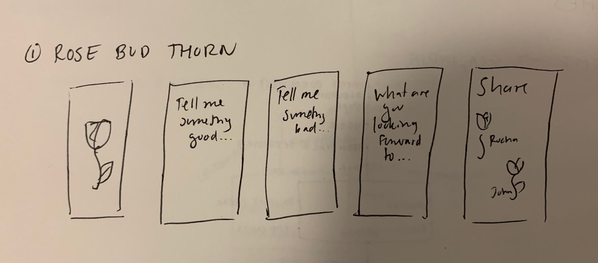
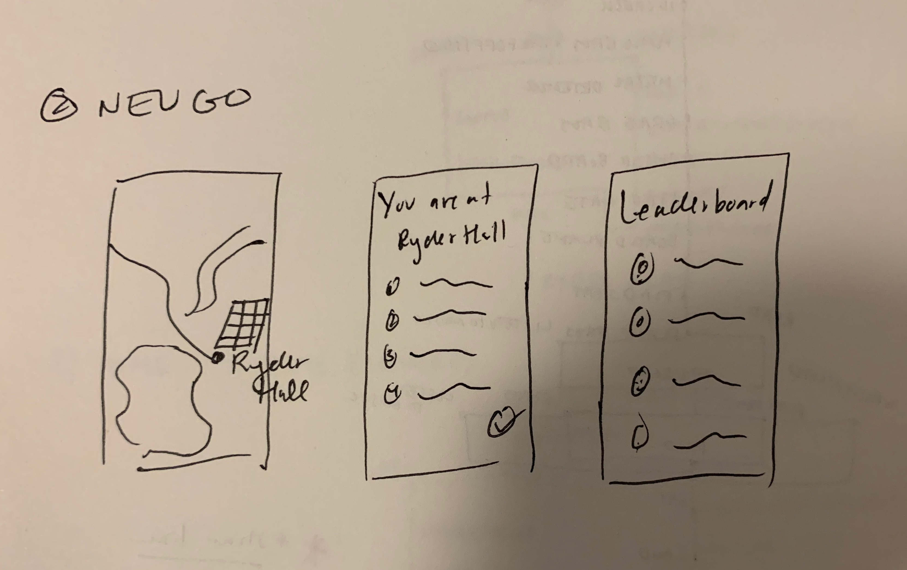

Getting access to mental health resources at Northeastern is really difficult. I would like to create a mobile application that allowed students to write down a rose, bud and thorn. Something good that happened to them, something bad that happened to them and something they are looking forward to. This application would connect them with other students that may have similar struggles and give them access to the appropriate resources like being able to schedule an appointment with University Health Services.
Mental health is a really important issue for everyone, but I think it is especially important to consider on a college campus. It is also frequently not talked about and under funded. From my personal experience, I have talked to several students who want more resources for their mental health and feel as though they don’t have easy access to them.
I would like to create something simpler and more accessible for students to reflect on their mental health as well as be able to make connections with resources and other students. I want to create this application based off of an old Girl Scout’s tradition called “Rose Bud Thorn”. Whoever uses this app will have to write down something good that has happened to them, something bad that happened to them and something they are looking forward to.
Multiplayer game for new students to help them get acquainted with the campus. Similar to Pokemon Go, students would have to go around campus finding popular areas and answering questions at each of the stops. This would make it an activity that someone could do alone or with friends.
Northeastern has a small campus, but it is filled with hundreds of buildings, restaurants and dorms. As a new student, it can be difficult to navigate the campus and it often takes years to find places that work best for you in terms of studying and hanging out. Currently, there is no consolidated place to view all the buildings and interact with the spaces around you. There are maps, but they lack interaction.
For this, I would like to propose a multiplayer game, where different students (new or old) could come together to explore the environment around them. Similar to Pokemon Go, there would be known places to go with a map. Students could explore in groups or alone to these locations and answer questions or play small games at these locations. This could benefit new students looking to get better acquainted with the campus, and older students who might want to find a new place.
